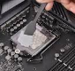

Ventilación¶
Ventilación¶
Dado que el procesador emite calor, se hace necesario disiparlo afín de evitar que los circuitos se derritan. Esta es la razón por la que generalmente se monta sobre un disipador térmico, hecho de un metal conductor del calor (cobre o aluminio) a fin de ampliar la superficie de transferencia de temperatura del procesador. Para mejorar la conducción del calor se utiliza pasta térmica y por lo general, el disipador está acompañado de un ventilador para mejorar la circulación de aire y la transferencia de calor. La unidad también incluye un ventilador que expulsa el aire caliente de la carcasa, dejando entrar el aire fresco del exterior.
Disipadores de Calor¶
Es una estructura metálica (por lo general de aluminio) que va montado encima del Microprocesador para ayudar a disipar el calor que genera.
Los pliegues del disipador hacen que aumente su área «La Ley de Fourier indica que el flujo de calor es directamente proporcional a la superficie de contacto y a la constante de conductividad térmica

La pasta térmica¶
Es una sustancia que incrementa la conducción de calor entre las superficies de dos o más objetos que pueden ser irregulares y no hacen contacto directo. En electrónica e informática, es frecuentemente usada para ayudar a la disipación del calor de componentes mediante un disipador.

Si observamos las superficies a un nivel microscópico vemos que tienen rugosidades, la pasta térmica hace que las superficies tengan mejor contacto
Tipos de refrigeración¶
Por aire
Refrigeración pasiva por aire
El aire a temperatura ambiente enfría los componentes de la computadora. Las técnicas pasivas de enfriamiento consisten en incrementar la superficie de contacto con el aire para maximizar el calor que éste es capaz de retirar.

Refrigeración activa por Aire
Partimos de un sistema pasivo y agregamos un ventilador o unas turbinas que aceleren el flujo de aire.

Refrigeración Liquida
Por Agua El agua tiene una mejor conductividad térmica que el aire, por lo cual puede transferir calor más eficientemente y a mayores distancias que el aire. Es más cara y silenciosa que la refrigeración activa por aire.

Refrigeración Líquida por Inmersión
El pc es totalmente sumergido en un líquido de conductividad eléctrica muy baja, como el aceite mineral. El pc se mantiene enfriado por el intercambio de calor entre sus partes, el líquido refrigerante y el aire del ambiente.
Otras formas de refrigeración
Refrigeración por Metal Líquido «El metal líquido, también conocido como LM, funciona igual que la pasta térmica, rellenando los espacios microscópicos que hay entre las superficies del componente y del disipador de calor. … El galio es un metal blando con un punto de fusión bajo y un punto de ebullición alto»
Refrigeración Termoeléctrica (Celula de Peltier) «El principio de funcionamiento de la refrigeración termoeléctrica por células Peltier es bastante sencillo. Se usan dos placas cerámicas, las cuales están separados por pilares, fabricados con dos tipos de semiconductores: el tipo P (boro, indio, galio) y el tipo N (fósforo, arsénico, antimonio). Cuando se hace circular una corriente continua por entre ambas placas cerámicas, una de ellas se enfría. Mientras que todo el calor que pierde esta, lo recoge la segunda placa cerámica.»
Refrigeración por Heatpipes. Un heatpipe es un puente termico, tienen una elevada conductividad térmica, la capacidad del material de cambiar de temperatura, sea para calentarse o para enfriarse
Refrigeración por Cambio de Fase. El funcionamiento de una refrigeración por cambio de fase está basado en el principio de la física que explica que, cada vez que un fluido cambia de fase, lo hace absorbiendo o desprendiendo calor de su entorno para poder realizar el cambio.

Refrigeración por LN2, gracias a su punto de ebullición de -195,79 ºC, es el ojito derecho de los aficionados al «overclocking», que se dedican a aumentar la frecuencia de los procesadores a niveles increíbles, buscando récords.
Refrigeración por Criogenia. La criogenia es el conjunto de técnicas utilizadas para enfriar un material a la temperatura de ebullición del nitrógeno o a temperaturas aún más bajas. … El uso de helio líquido en lugar de nitrógeno permite alcanzar la temperatura de ebullición de éste, que es de 4,22 K (-268,93 °C)
{kind=link}